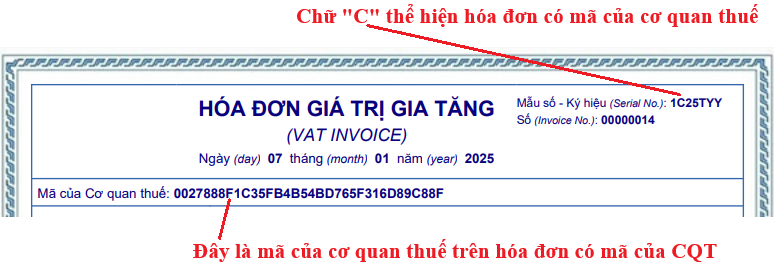
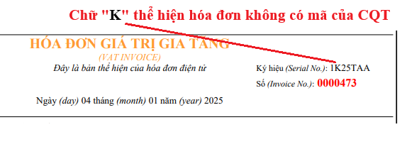

Phân biệt hóa đơn điện tử có mã của cơ quan thuế và hóa đơn điện từ không có mã của CQT
Theo điểm b, khoản 1, điều 5 của Thông tư 32/2025/TT-BTC hướng dẫn thực hiện Nghị định 70/2025/NĐ-CP có hiệu lực từ ngày 01/06/2025 thì:
Ký hiệu hóa đơn điện tử là nhóm 6 ký tự gồm cả chữ viết và chữ số thể hiện ký hiệu hóa đơn điện tử để phản ánh các thông tin về loại hóa đơn điện tử có mã của cơ quan thuế hoặc hóa đơn điện tử không có mã, năm lập hóa đơn, loại hóa đơn điện tử được sử dụng. Sáu (06) ký tự này được quy định như sau:
- Ký tự đầu tiên là một (01) chữ cái được quy định là C hoặc K như sau: C thể hiện hóa đơn điện tử có mã của cơ quan thuế, K thể hiện hóa đơn điện tử không có mã;
Nhận biết hóa đơn điện tử có mã của cơ quan thuế:

Nhận biết hóa đơn điện tử không có mã của cơ quan thuế:

| Phân Biệt | |||||||
| STT | Nội dung | Hóa đơn có mã | Hóa đơn không mã | ||||
| 1 | Khái niệm | Là hóa đơn điện tử được cơ quan thuế cấp mã trước khi tổ chức, cá nhân bán hàng hóa, cung cấp dịch vụ gửi cho người mua | Là hóa đơn điện tử do tổ chức bán hàng hóa, cung cấp dịch vụ gửi cho người mua không có mã của cơ quan thuế | ||||
| 2 | Mã của cơ quan thuế | Là một dãy gồm 34 ký tự và là duy nhất do hệ thống của cơ quan thuế hoặc hệ thống của đơn vị do cơ quan thuế ủy quyền tạo ra | Không có | ||||
| 3 | Đối tượng áp dụng |
1. Doanh nghiệp, tổ chức kinh tế khi bán hàng hóa, cung cấp dịch vụ không phân biệt giá trị từng lần bán hàng hóa, cung cấp dịch vụ (trừ các đối tượng đủ điều kiện áp dụng hóa đơn không có mã) 2. Các doanh nghiệp có rủi ro cao về thuế được cơ quan thuế yêu cầu sử dụng Chi tiết các bạn tìm hiểu thêm tại đây: Đối tượng sử dụng hóa đơn điện tử có mã của cơ quan thuế |
1. Doanh nghiệp kinh doanh ở lĩnh vực: điện lực, xăng dầu, bưu chính viễn thông, nước sạch, tài chính tín dụng, bảo hiểm, y tế, kinh doanh thương mại điện tử, kinh doanh siêu thị, thương mại, vận tải hàng không, đường bộ, đường sắt, đường biển, đường thủy 2. Doanh nghiệp, tổ chức kinh tế đã hoặc sẽ thực hiện giao dịch với cơ quan thuế bằng phương tiện điện tử, xây dựng hạ tầng công nghệ thông tin, có hệ thống phần mềm kế toán, phần mềm lập hóa đơn điện tử đáp ứng lập, tra cứu hóa đơn điện tử, lưu trữ dữ liệu hóa đơn điện tử theo quy định và bảo đảm việc truyền dữ liệu hóa đơn điện tử đến người mua và đến cơ quan thuế khi bán hàng hóa, cung cấp dịch vụ, không phân biệt giá trị từng lần bán hàng hóa, cung cấp dịch vụ Chi tiết các bạn tìm hiểu thêm tại đây: Đối tượng sử dụng hóa đơn điện tử không có mã của cơ quan thuế |
||||
| 4 | Mẫu hóa đơn |
Chi tiết về mẫu hóa đơn điện tử có mã của CQT và cách nhận hóa đơn điện tử có mã của CQT thì các bạn xem tại đây: Mẫu hóa đơn điện tử có mã cơ quan thuế theo TT 32 và NĐ 70 |
Chi tiết về mẫu hóa đơn điện tử không có mã của CQT và cách nhận hóa đơn điện tử không có mã của CQT thì các bạn xem tại đây: Mẫu hóa đơn không có mã của cơ quan thuế theo TT 32, NĐ 70 |
||||
| 5 | Ký hiệu hóa đơn |
Ký tự đầu tiên là một (01) chữ cái được quy định là: C thể hiện hóa đơn điện tử có mã của cơ quan thuế Ví dụ: C25TTU - là hóa đơn có mã của cơ quan thuế được lập năm 2025 và là hóa đơn điện tử do doanh nghiệp, tổ chức đăng ký sử dụng với cơ quan thuế |
Ký tự đầu tiên là một (01) chữ cái được quy định là: K thể hiện hóa đơn điện tử không có mã của cơ quan thuế Ví dụ: K25TTU - là hóa đơn không có mã được lập năm 2025 và là hóa đơn điện tử do doanh nghiệp, tổ chức đăng ký sử dụng với cơ quan thuế; |
||||
| 6 | Thủ tục đăng ký sử dụng |
Trên mẫu 01/ĐKTĐ-HĐĐT: - Tại mục 1. Hình thức hóa đơn: tích vào Có mã của cơ quan thuế - Tại mục 3. Phương thức chuyển dữ liệu hóa đơn điện tử: tích vào mục Chuyển đầy đủ nội dung từng hóa đơn. |
Trên mẫu 01/ĐKTĐ-HĐĐT: - Tại mục 1. Hình thức hóa đơn: tích vào Không có mã của cơ quan thuế. - Tại mục 2: Hình thức gửi dữ liệu hóa đơn điện tử: tích chọn hình thức phù hợp ở mục b. - Tại mục 3. Phương thức chuyển dữ liệu hóa đơn điện tử: tích chọn phương án phù hợp. |
||||
| 7 | Xuất hóa đơn |
B1: Lập hóa đơn B2: Ký số B3: Gửi hóa đơn lên cơ quan thuế để cấp mã B4: Gửi cho người mua |
B1: Lập hóa đơn B2: Ký số B3: Gửi cho người mua |
||||
| 8 | Chuyển dữ liệu hóa đơn lên cơ quan thuế |
Ngay tại thời điểm doanh nghiệp lập hóa đơn, ký số và thực hiện gửi hóa đơn lên cơ quan thuế để cấp mã. Bên mua có thể vào website của Tổng cục Thuế tra cứu ngay thông tin hóa đơn. |
Có 2 hình thức: 1. Chuyển theo bảng tổng hợp dữ liệu hóa đơn cùng với thời gian gửi Tờ khai thuế giá trị gia tăng (tháng/quý). 2. Chuyển đầy đủ nội dung hóa đơn áp dụng đối với các trường hợp còn lại: Người bán sau khi lập đầy đủ các nội dung trên hóa đơn gửi hóa đơn cho người mua và đồng thời gửi hóa đơn cho cơ quan thuế (chậm nhất là trong cùng ngày gửi cho người mua). |
||||
| 9 | Xử lý bảng tổng hợp hóa đơn điện tử có sai sót | Không có |
Đối với doanh nghiệp chuyển dữ liệu hóa đơn theo hình thức bảng tổng hợp: - Sau thời hạn chuyển bảng tổng hợp dữ liệu hóa đơn điện tử đến cơ quan thuế, trường hợp thiếu dữ liệu hóa đơn điện tử tại bảng tổng hợp dữ liệu hóa đơn điện tử đã gửi cơ quan thuế thì người bán gửi bảng tổng hợp dữ liệu hóa đơn điện tử bổ sung; - Trường hợp bảng tổng hợp dữ liệu hóa đơn điện tử đã gửi cơ quan thuế có sai sót thì người bán gửi thông tin điều chỉnh cho các thông tin đã kê khai trên bảng tổng hợp; |
||||
| 10 | Hóa đơn điện tử được khởi tạo từ máy tính tiền có kết nối chuyển dữ liệu với cơ quan thuế | Có | Không có | ||||
Ưu nhược điểm của hóa đơn có mã, không mã
| STT | Nội dung | Hóa đơn có mã | Hóa đơn không mã |
| 1 | Ưu điểm |
- Điều kiện về hạ tầng CNTT: chỉ cần có máy tính kết nối internet và sử dụng phần mềm lập hóa đơn. - Hóa đơn sau khi xuất gửi lên cơ quan thuế để cấp mã nên có tính bảo mật cao, được khách hàng tin tưởng. - Không phải kiểm soát việc gửi dữ liệu hóa đơn lên thuế do đã gửi khi cấp mã. - Khách hàng khi nhận được hóa đơn có thể vào cổng thông tin của Tổng cục Thuế tra cứu ngay thông tin hóa đơn. |
- Hóa đơn sau khi xuất không cần gửi lên thuế cấp mã nên linh hoạt về thời điểm lập hóa đơn. - Không lo gián đoạn xuất hóa đơn khi hệ thống thuế bị sự cố. |
| 2 | Nhược điểm |
- Hóa đơn khi xuất phải gửi ngay lên cơ quan thuế để cấp mã nên không linh hoạt về thời điểm xuất hóa đơn. - Phụ thuộc vào hệ thống của cơ quan thuế khi cấp mã nên khi hệ thống có sự cố sẽ bị gián đoạn xuất hóa đơn. |
- Phải kiểm soát việc gửi dữ liệu hóa đơn lên thuế trong ngày. - Có thể gặp rủi ro phạt do chậm gửi dữ liệu hóa đơn lên thuế. |
==============================
Quyết định số 2799/ QĐ-CT ngày 6/8/2025 của Cục Thuế về việc ban hành Quy trình quản lý hóa đơn điện tử, chứng từ điện tử
Điều 18. Tiếp nhận và cấp mã của CQT cho HĐĐT có mã.
Bước 1. Đối chiếu thông tin HĐĐT.
Trong thời gian 05 phút kể từ khi Cổng thông tin HĐĐT-CTĐT tiếp nhận HĐĐT đề nghị cấp mã từ NNT (không bao gồm HĐĐT theo từng lần phát sinh thực hiện theo quy định tại Điều 21 Quy trình này), Hệ thống HĐĐT-CTĐT tự động đối chiếu các thông tin, bao gồm:
- Mã số thuế phải có trạng thái đang hoạt động (trạng thái 00, 02).
- Các chỉ tiêu trên hóa đơn đúng chuẩn dữ liệu.
- Chữ ký số của NNT theo đúng quy định của Bộ Khoa học và Công nghệ, và phù hợp với thông tin NNT đã đăng ký trên Mẫu số 01/ĐKTĐ-HĐĐT.
- Loại hóa đơn phù hợp với thông tin NNT đã đăng ký trên Mẫu số 01/ĐKTĐ-HĐĐT.
- Số hóa đơn là duy nhất trong một ký hiệu hóa đơn của NNT.
- NNT không thuộc trường hợp ngừng sử dụng HĐĐT.
- HĐĐT có thời điểm lập phù hợp với hình thức áp dụng HĐĐT theo đăng ký sử dụng của NNT hoặc các thông báo của CQT đã gửi NNT.
- Trường hợp NNT gửi HĐĐT qua tổ chức truyền nhận, Hệ thống HĐĐT-CTĐT tự động đối chiếu thêm các thông tin đối với tổ chức truyền nhận theo hướng dẫn tại điểm b khoản 2 Điều 6 Quy trình.
- Trường hợp NNT ủy nhiệm lập hóa đơn, Hệ thống HĐĐT-CTĐT tự động đối chiếu thêm các thông tin đối với hóa đơn ủy nhiệm theo hướng dẫn tại điểm b khoản 2 Điều 6 Quy trình.
- Trường hợp hóa đơn tích hợp, hệ thống kiểm tra trạng thái hoạt động bên thu, loại HĐ tích hợp, ký hiệu mẫu số HĐ tích hợp, ký hiệu HĐ tích hợp phù hợp với thông tin đã đăng ký.
- Trường hợp hóa đơn đề nghị cấp mã là hóa đơn thay thế thì tình trạng hóa đơn bị thay thế phải đảm bảo: chưa bị hủy, chưa bị thay thế, chưa bị điều chỉnh và không phải là hóa đơn điều chỉnh. Khi NNT đề nghị cấp mã một hóa đơn thay thế cho nhiều hóa đơn, Hệ thống HĐĐT-CTĐT tự động đối chiếu thông tin người mua, tên hàng, đơn giá, thuế suất trên hóa đơn thay thế với các thông tin hoá đơn lập sai trên bảng kê Mẫu số 01/BK-ĐCTT Phụ lục 1A ban hành kèm theo Nghị định 70/2025/NĐ-CP.
- Trường hợp hóa đơn đề nghị cấp mã là hóa đơn điều chỉnh thì tình trạng hóa đơn bị điều chỉnh phải đảm bảo: chưa bị hủy, chưa bị thay thế, không phải là hóa đơn điều chỉnh và không phải là hóa đơn thay thế. Khi NNT đề nghị cấp mã một hóa đơn điều chỉnh cho nhiều hóa đơn, Hệ thống HĐĐT-CTĐT tự động đối chiếu thông tin người mua, tên hàng, đơn giá, thuế suất trên hóa đơn điều chỉnh với các thông tin hóa đơn lập sai trên bảng kê Mẫu số 01/BK-ĐCTT Phụ lục IA ban hành kèm theo Nghị định 70/2025/NĐ-CP.
- Mã số thuế phải có trạng thái đang hoạt động (trạng thái 00, 02).
- Các chỉ tiêu trên hóa đơn đúng chuẩn dữ liệu.
- Chữ ký số của NNT theo đúng quy định của Bộ Khoa học và Công nghệ, và phù hợp với thông tin NNT đã đăng ký trên Mẫu số 01/ĐKTĐ-HĐĐT.
- Loại hóa đơn phù hợp với thông tin NNT đã đăng ký trên Mẫu số 01/ĐKTĐ-HĐĐT.
- Số hóa đơn là duy nhất trong một ký hiệu hóa đơn của NNT.
- NNT không thuộc trường hợp ngừng sử dụng HĐĐT.
- HĐĐT có thời điểm lập phù hợp với hình thức áp dụng HĐĐT theo đăng ký sử dụng của NNT hoặc các thông báo của CQT đã gửi NNT.
- Trường hợp NNT gửi HĐĐT qua tổ chức truyền nhận, Hệ thống HĐĐT-CTĐT tự động đối chiếu thêm các thông tin đối với tổ chức truyền nhận theo hướng dẫn tại điểm b khoản 2 Điều 6 Quy trình.
- Trường hợp NNT ủy nhiệm lập hóa đơn, Hệ thống HĐĐT-CTĐT tự động đối chiếu thêm các thông tin đối với hóa đơn ủy nhiệm theo hướng dẫn tại điểm b khoản 2 Điều 6 Quy trình.
- Trường hợp hóa đơn tích hợp, hệ thống kiểm tra trạng thái hoạt động bên thu, loại HĐ tích hợp, ký hiệu mẫu số HĐ tích hợp, ký hiệu HĐ tích hợp phù hợp với thông tin đã đăng ký.
- Trường hợp hóa đơn đề nghị cấp mã là hóa đơn thay thế thì tình trạng hóa đơn bị thay thế phải đảm bảo: chưa bị hủy, chưa bị thay thế, chưa bị điều chỉnh và không phải là hóa đơn điều chỉnh. Khi NNT đề nghị cấp mã một hóa đơn thay thế cho nhiều hóa đơn, Hệ thống HĐĐT-CTĐT tự động đối chiếu thông tin người mua, tên hàng, đơn giá, thuế suất trên hóa đơn thay thế với các thông tin hoá đơn lập sai trên bảng kê Mẫu số 01/BK-ĐCTT Phụ lục 1A ban hành kèm theo Nghị định 70/2025/NĐ-CP.
- Trường hợp hóa đơn đề nghị cấp mã là hóa đơn điều chỉnh thì tình trạng hóa đơn bị điều chỉnh phải đảm bảo: chưa bị hủy, chưa bị thay thế, không phải là hóa đơn điều chỉnh và không phải là hóa đơn thay thế. Khi NNT đề nghị cấp mã một hóa đơn điều chỉnh cho nhiều hóa đơn, Hệ thống HĐĐT-CTĐT tự động đối chiếu thông tin người mua, tên hàng, đơn giá, thuế suất trên hóa đơn điều chỉnh với các thông tin hóa đơn lập sai trên bảng kê Mẫu số 01/BK-ĐCTT Phụ lục IA ban hành kèm theo Nghị định 70/2025/NĐ-CP.
Bước 2. Cấp mã cho HĐĐT.
Trường hợp HĐĐT đảm bảo thông tin theo quy định tại Bước 1 Điều này, Hệ thống HĐĐT-CTĐT thực hiện cấp mã hóa đơn, ký số nhân danh Cục Thuế và gửi cho NNT chậm nhất trong thời gian 05 phút kể từ thời điểm nhận được HĐĐT đề nghị cấp mã theo phương thức quy định tại khoản 3 Điều 6 Quy trình.
Trường hợp HĐĐT không đảm bảo thông tin theo quy định tại Bước 1 Điều này, Hệ thống HĐĐT-CTĐT tự động tạo thông báo kết quả kiểm tra dữ liệu HĐĐT (Mẫu số 01/TB-KTDL tại Nghị định số 70/2025/NĐ-CP), ký nhân danh Cục Thuế và gửi NNT theo quy định tại điểm b khoản 4 Điều 6 Quy trình này.
Điều 19. Tiếp nhận HĐĐT không có mã chuyển theo phương thức chuyển đầy đủ nội dung hóa đơn theo quy định tại khoản 14 Điều 1 Nghị định số 70/2025/NĐ-CPTrường hợp HĐĐT không đảm bảo thông tin theo quy định tại Bước 1 Điều này, Hệ thống HĐĐT-CTĐT tự động tạo thông báo kết quả kiểm tra dữ liệu HĐĐT (Mẫu số 01/TB-KTDL tại Nghị định số 70/2025/NĐ-CP), ký nhân danh Cục Thuế và gửi NNT theo quy định tại điểm b khoản 4 Điều 6 Quy trình này.
Trong thời gian 15 phút kể từ khi nhận được gói dữ liệu HĐĐT không có mã của NNT, Cổng thông tin HĐĐT-CTĐT tự động đối chiếu thông tin gói dữ liệu của NNT, bao gồm:
- Mã số thuế của NNT phải có trạng thái đang hoạt động (trạng thái 00, 02).
- Các chỉ tiêu trên hóa đơn đúng chuẩn dữ liệu.
- NNT không thuộc trường hợp ngừng sử dụng HĐĐT.
- Chữ ký số của NNT theo đúng quy định của Bộ Khoa học và Công nghệ và phù hợp với thông tin NNT đã đăng ký trên Mẫu số 01/ĐKTĐ-HĐĐT.
- Trường hợp NNT gửi HĐĐT qua tổ chức truyền nhận, Hệ thống HĐĐT-CTĐT tự động đối chiếu thêm các thông tin đối với tổ chức truyền nhận theo hướng dẫn tại điểm b khoản 2 Điều 6 Quy trình.
- Trường hợp doanh nghiệp/tổ chức kết nối gửi dữ liệu trực tiếp đến CQT thì đối chiếu trạng thái MST của doanh nghiệp/tổ chức kết nối trực tiếp phải đang hoạt động (00).
- Số lượng hóa đơn trong gói dữ liệu phải khớp đúng với số lượng hóa đơn trong thông tin chung của gói dữ liệu HĐĐT.
- NNT không thuộc danh sách sử dụng HĐĐT có mã của CQT nếu là gói dữ liệu HĐĐT không có mã.
Căn cứ kết quả đối chiếu các thông tin nêu trên, Hệ thống HĐĐT-CTĐT tự động tạo thông báo Mẫu số 01/TB-KTDL, ký nhân danh Cục Thuế và gửi NNT theo quy định tại điểm b khoản 4 Điều 6 Quy trình này.
- Mã số thuế của NNT phải có trạng thái đang hoạt động (trạng thái 00, 02).
- Các chỉ tiêu trên hóa đơn đúng chuẩn dữ liệu.
- NNT không thuộc trường hợp ngừng sử dụng HĐĐT.
- Chữ ký số của NNT theo đúng quy định của Bộ Khoa học và Công nghệ và phù hợp với thông tin NNT đã đăng ký trên Mẫu số 01/ĐKTĐ-HĐĐT.
- Trường hợp NNT gửi HĐĐT qua tổ chức truyền nhận, Hệ thống HĐĐT-CTĐT tự động đối chiếu thêm các thông tin đối với tổ chức truyền nhận theo hướng dẫn tại điểm b khoản 2 Điều 6 Quy trình.
- Trường hợp doanh nghiệp/tổ chức kết nối gửi dữ liệu trực tiếp đến CQT thì đối chiếu trạng thái MST của doanh nghiệp/tổ chức kết nối trực tiếp phải đang hoạt động (00).
- Số lượng hóa đơn trong gói dữ liệu phải khớp đúng với số lượng hóa đơn trong thông tin chung của gói dữ liệu HĐĐT.
- NNT không thuộc danh sách sử dụng HĐĐT có mã của CQT nếu là gói dữ liệu HĐĐT không có mã.
Căn cứ kết quả đối chiếu các thông tin nêu trên, Hệ thống HĐĐT-CTĐT tự động tạo thông báo Mẫu số 01/TB-KTDL, ký nhân danh Cục Thuế và gửi NNT theo quy định tại điểm b khoản 4 Điều 6 Quy trình này.
Điều 20. Tiếp nhận dữ liệu hóa đơn không có mã chuyển theo phương thức chuyển dữ liệu HĐĐT theo bảng tổng hợp dữ liệu hóa đơn theo quy định tại khoản 14 Điều 1 Nghị định số 70/2025/NĐ-CP.
1. Tiếp nhận dữ liệu hóa đơn.
Trong thời gian 15 phút kể từ khi nhận được gói dữ liệu HĐĐT không mã theo bảng tổng hợp của NNT) theo Mẫu số 01/TH-HĐĐT Phụ lục IA ban hành kèm theo Nghị định số 70/2025/NĐ-CP, Cổng thông tin HĐĐT-CTĐT tự động đối chiếu thông tin gói dữ liệu của NNT gồm:
- Mã số thuế của NNT phải có trạng thái đang hoạt động (trạng thái 00, 02).
- Các chỉ tiêu trên bảng tổng hợp đúng Chuẩn dữ liệu.
- NNT không thuộc trường hợp ngừng sử dụng HĐĐT.
- Chữ ký số của NNT theo đúng quy định của Bộ Khoa học và Công nghệ và phù hợp với thông tin NNT đã đăng ký trên Mẫu số 01/ĐKTĐ-HĐĐT.
- Trường hợp NNT gửi HĐĐT qua tổ chức truyền nhận, Hệ thống HĐĐT-CTĐT tự động đối chiếu thêm các thông tin đối với tổ chức truyền nhận theo hướng dẫn tại điểm b khoản 2 Điều 6 Quy trình.
- Trường hợp doanh nghiệp/tổ chức kết nối gửi dữ liệu trực tiếp đến CQT thì đối chiếu trạng thái MST của doanh nghiệp/tổ chức kết nối trực tiếp phải đang hoạt động (00).
- Số lượng bảng tổng hợp trong gói dữ liệu phải khớp đúng với số lượng bảng tổng hợp trong thông tin chung của gói dữ liệu HĐĐT.
Sau khi nhận đủ dữ liệu, Hệ thống kiểm tra thông tin bảng tổng hợp. Trong trường hợp khớp đúng, Hệ thống HĐĐT-CTĐT tự động tạo thông báo Mẫu số 01/TB-KTDL, ký nhân danh Cục Thuế và gửi NNT theo quy định tại điểm b khoản 4 Điều 6 Quy trình này.
- Mã số thuế của NNT phải có trạng thái đang hoạt động (trạng thái 00, 02).
- Các chỉ tiêu trên bảng tổng hợp đúng Chuẩn dữ liệu.
- NNT không thuộc trường hợp ngừng sử dụng HĐĐT.
- Chữ ký số của NNT theo đúng quy định của Bộ Khoa học và Công nghệ và phù hợp với thông tin NNT đã đăng ký trên Mẫu số 01/ĐKTĐ-HĐĐT.
- Trường hợp NNT gửi HĐĐT qua tổ chức truyền nhận, Hệ thống HĐĐT-CTĐT tự động đối chiếu thêm các thông tin đối với tổ chức truyền nhận theo hướng dẫn tại điểm b khoản 2 Điều 6 Quy trình.
- Trường hợp doanh nghiệp/tổ chức kết nối gửi dữ liệu trực tiếp đến CQT thì đối chiếu trạng thái MST của doanh nghiệp/tổ chức kết nối trực tiếp phải đang hoạt động (00).
- Số lượng bảng tổng hợp trong gói dữ liệu phải khớp đúng với số lượng bảng tổng hợp trong thông tin chung của gói dữ liệu HĐĐT.
Sau khi nhận đủ dữ liệu, Hệ thống kiểm tra thông tin bảng tổng hợp. Trong trường hợp khớp đúng, Hệ thống HĐĐT-CTĐT tự động tạo thông báo Mẫu số 01/TB-KTDL, ký nhân danh Cục Thuế và gửi NNT theo quy định tại điểm b khoản 4 Điều 6 Quy trình này.
2. Đôn đốc NNT gửi dữ liệu HĐĐT theo bảng tổng hợp dữ liệu hóa đơn.
Hệ thống HĐĐT-CTĐT tự động tổng hợp danh sách theo dõi người nộp thuế chuyển dữ liệu hóa đơn điện tử đến cơ quan thuế theo Mẫu số 01-8/QTr-HĐĐT và tổng hợp tình hình chuyển dữ liệu hóa đơn điện tử theo bảng tổng hợp dữ liệu hóa đơn điện tử theo Mẫu số 01-9/QTr-HĐĐT ban hành kèm theo Quy trình, lập danh sách NNT đã gửi, chưa gửi hoặc gửi chậm bảng tổng hợp dữ liệu hóa đơn điện tử hàng tháng/quý để CQT ra thông báo đôn đốc nộp.
Hết thời hạn nộp bảng tổng hợp dữ liệu hóa đơn điện tử theo Mẫu số 01/TH-HĐĐT, Bộ phận quản lý sử dụng rà soát danh sách NNT chưa nộp, nộp chậm bảng tổng hợp để xử lý vi phạm theo quy định.
Hết thời hạn nộp bảng tổng hợp dữ liệu hóa đơn điện tử theo Mẫu số 01/TH-HĐĐT, Bộ phận quản lý sử dụng rà soát danh sách NNT chưa nộp, nộp chậm bảng tổng hợp để xử lý vi phạm theo quy định.
Điều 21. Tiếp nhận và cấp mã đối với HĐĐT theo từng lần phát sinh theo quy định tại khoản 10 Điều 1 Nghị định số 70/2025/NĐ-CP.
1. Tiếp nhận và cấp mã HĐĐT.
Bước 1. Tiếp nhận đề nghị của NNT về việc cấp HĐĐT có mã của CQT theo từng lần phát sinh theo Mẫu số 06/ĐN-PSĐT Phụ lục IA ban hành kèm theo Nghị định số 70/2025/NĐ-CP.
a) Tiếp nhận đề nghị cấp HĐĐT có mã CQT theo từng lần phát sinh theo Mẫu số 06/ĐN-PSĐT Phụ lục IA ban hành kèm theo Nghị định số 70/2025/NĐ-CP theo phương thức điện tử trong trường hợp NNT đã có chữ ký số hoặc tài khoản sử dụng Cổng thông tin HĐĐT-CTĐT.
- Cổng thông tin HĐĐT-CTĐT tiếp nhận đề nghị cấp HĐĐT có mã do NNT lập và gửi theo các phương thức quy định tại khoản 1 Điều 6 Quy trình này, kiểm tra thông tin của NNT đề nghị cấp hóa đơn theo từng lần phát sinh, tự động gửi thông báo tiếp nhận/không tiếp nhận đề nghị cấp hóa đơn của NNT.
Trong thời gian 15 phút kể từ khi nhận được đề nghị cấp HĐĐT có mã, Cổng thông tin HĐĐT-CTĐT tự động kiểm tra thông tin sau:
+ Trạng thái MST của NNT khác trạng thái 06 (người nộp thuế không hoạt động tại địa chỉ đã đăng ký) hoặc NNT đã được CQT ban hành thông báo về việc sử dụng hóa đơn điện tử theo lần phát sinh.
+ Thông tin tên, số căn cước\căn cước công dân\mã định danh\hộ chiếu người đại diện theo pháp luật của NNT khớp đúng với thông tin trên Mẫu số 06/ĐN-PSĐT Nghị định số 70/2025/NĐ-CP.
Trên cơ sở kết quả kiểm tra, Hệ thống HĐĐT-CTĐT tự động tạo thông báo phản hồi về hồ sơ đề nghị cấp HĐĐT có mã của CQT theo từng lần phát sinh (Mẫu số 01/TB-KTDL phụ lục IB Nghị định 70/2025/NĐ-CP), ký nhân danh Cục Thuế và gửi NNT theo quy định tại điểm b khoản 4 Điều 6 Quy trình này.
b) Tiếp nhận đề nghị cấp HĐĐT có mã của CQT theo từng lần phát sinh (Mẫu số 06/ĐN-PSĐT ban hành kèm theo Nghị định số 70/2025/NĐ-CP) trong trường hợp NNT chưa có chữ ký số và tài khoản sử dụng Cổng thông tin HĐĐT-CTĐT.
Công chức thuộc Bộ phận Tiếp nhận dữ liệu kiểm tra việc NNT gửi đề nghị cấp hóa đơn có mã đến đúng CQT quản lý, tiếp nhận đề nghị Mẫu số 06/ĐN-PSĐT ban hành kèm theo Nghị định số 70/2025/NĐ-CP bản giấy có ký, đóng dấu của NNT (nếu có); hướng dẫn NNT nộp hồ sơ khai thuế, nộp thuế theo quy định tại luật Quản lý thuế và các văn bản hướng dẫn thi hành.
Trường hợp NNT gửi một đơn đề nghị cấp HĐĐT có mã của CQT cho nhiều hóa đơn của nhiều người mua thì công chức thuế hướng dẫn NNT khai đầy đủ thông tin từng người mua.
Bước 2. Đối chiếu thông tin trên đề nghị cấp HĐĐT có mã CQT theo từng lần phát sinh.
a) Tiếp nhận đề nghị cấp HĐĐT có mã CQT theo từng lần phát sinh theo Mẫu số 06/ĐN-PSĐT Phụ lục IA ban hành kèm theo Nghị định số 70/2025/NĐ-CP theo phương thức điện tử trong trường hợp NNT đã có chữ ký số hoặc tài khoản sử dụng Cổng thông tin HĐĐT-CTĐT.
- Cổng thông tin HĐĐT-CTĐT tiếp nhận đề nghị cấp HĐĐT có mã do NNT lập và gửi theo các phương thức quy định tại khoản 1 Điều 6 Quy trình này, kiểm tra thông tin của NNT đề nghị cấp hóa đơn theo từng lần phát sinh, tự động gửi thông báo tiếp nhận/không tiếp nhận đề nghị cấp hóa đơn của NNT.
Trong thời gian 15 phút kể từ khi nhận được đề nghị cấp HĐĐT có mã, Cổng thông tin HĐĐT-CTĐT tự động kiểm tra thông tin sau:
+ Trạng thái MST của NNT khác trạng thái 06 (người nộp thuế không hoạt động tại địa chỉ đã đăng ký) hoặc NNT đã được CQT ban hành thông báo về việc sử dụng hóa đơn điện tử theo lần phát sinh.
+ Thông tin tên, số căn cước\căn cước công dân\mã định danh\hộ chiếu người đại diện theo pháp luật của NNT khớp đúng với thông tin trên Mẫu số 06/ĐN-PSĐT Nghị định số 70/2025/NĐ-CP.
Trên cơ sở kết quả kiểm tra, Hệ thống HĐĐT-CTĐT tự động tạo thông báo phản hồi về hồ sơ đề nghị cấp HĐĐT có mã của CQT theo từng lần phát sinh (Mẫu số 01/TB-KTDL phụ lục IB Nghị định 70/2025/NĐ-CP), ký nhân danh Cục Thuế và gửi NNT theo quy định tại điểm b khoản 4 Điều 6 Quy trình này.
b) Tiếp nhận đề nghị cấp HĐĐT có mã của CQT theo từng lần phát sinh (Mẫu số 06/ĐN-PSĐT ban hành kèm theo Nghị định số 70/2025/NĐ-CP) trong trường hợp NNT chưa có chữ ký số và tài khoản sử dụng Cổng thông tin HĐĐT-CTĐT.
Công chức thuộc Bộ phận Tiếp nhận dữ liệu kiểm tra việc NNT gửi đề nghị cấp hóa đơn có mã đến đúng CQT quản lý, tiếp nhận đề nghị Mẫu số 06/ĐN-PSĐT ban hành kèm theo Nghị định số 70/2025/NĐ-CP bản giấy có ký, đóng dấu của NNT (nếu có); hướng dẫn NNT nộp hồ sơ khai thuế, nộp thuế theo quy định tại luật Quản lý thuế và các văn bản hướng dẫn thi hành.
Trường hợp NNT gửi một đơn đề nghị cấp HĐĐT có mã của CQT cho nhiều hóa đơn của nhiều người mua thì công chức thuế hướng dẫn NNT khai đầy đủ thông tin từng người mua.
Trong thời gian 01 ngày làm việc kể từ khi nhận hồ sơ đề nghị cấp HĐĐT có mã của CQT theo từng lần phát sinh theo quy định, công chức thuộc bộ phận Tiếp nhận dữ liệu thực hiện:
- Rà soát đối chiếu với các thông tin trên đề nghị cấp HĐĐT có mã CQT theo từng lần phát sinh tại Mẫu số 06/ĐN-PSĐT với hồ sơ khai thuế của NNT theo quy định của pháp luật về quản lý thuế; đảm bảo tính chính xác của thông tin trên HĐĐT theo từng lần phát sinh được cơ quan thuế cấp mã.
- Đối chiếu chứng từ nộp thuế của NNT thuộc trường hợp được cấp hóa đơn theo từng lần phát sinh theo quy định tại điểm a khoản 10 Điều 1 Nghị định 70/2025/NĐ-CP đảm bảo NNT nộp đầy đủ số thuế phát sinh trên hóa đơn đề nghị cấp theo quy định của pháp luật thuế giá trị gia tăng, thu nhập cá nhân, thu nhập doanh nghiệp hoặc số phát sinh phải nộp theo pháp luật quản lý thuế và các loại thuế, phí khác (nếu có).
Bước 3. Trình, phê duyệt hồ sơ đề nghị cấp HĐĐT có mã của CQT theo từng lần phát sinh.
- Rà soát đối chiếu với các thông tin trên đề nghị cấp HĐĐT có mã CQT theo từng lần phát sinh tại Mẫu số 06/ĐN-PSĐT với hồ sơ khai thuế của NNT theo quy định của pháp luật về quản lý thuế; đảm bảo tính chính xác của thông tin trên HĐĐT theo từng lần phát sinh được cơ quan thuế cấp mã.
- Đối chiếu chứng từ nộp thuế của NNT thuộc trường hợp được cấp hóa đơn theo từng lần phát sinh theo quy định tại điểm a khoản 10 Điều 1 Nghị định 70/2025/NĐ-CP đảm bảo NNT nộp đầy đủ số thuế phát sinh trên hóa đơn đề nghị cấp theo quy định của pháp luật thuế giá trị gia tăng, thu nhập cá nhân, thu nhập doanh nghiệp hoặc số phát sinh phải nộp theo pháp luật quản lý thuế và các loại thuế, phí khác (nếu có).
Sau khi doanh nghiệp, tổ chức kinh tế, tổ chức khác, hộ kinh doanh, cá nhân kinh doanh đã nộp đủ thuế hoặc số phát sinh phải nộp theo quy định tại điểm b khoản 10 Điều 1 Nghị định 70/2025/NĐ-CP, ngay trong ngày làm việc hoặc chậm nhất là ngày làm việc tiếp theo, công chức thuộc bộ phận Tiếp nhận dữ liệu trình phụ trách bộ phận phê duyệt hồ sơ đề nghị cấp HĐĐT có mã của CQT theo từng lần phát sinh. Phụ trách Bộ phận xem xét trình Thủ trưởng CQT (hoặc người được Thủ trưởng CQT phân công, ủy quyền) duyệt hồ sơ đề nghị cấp HĐĐT có mã của CQT theo từng lần phát sinh.
Công chức thuộc bộ phận Tiếp nhận dữ liệu cấp mã cho hồ sơ của NNT và cấp tài khoản cho NNT sử dụng để lập hóa đơn trực tiếp trên Cổng thông tin HĐĐT- CTĐT đối với trường hợp NNT chưa có tài khoản sử dụng Cổng thông tin HĐĐT-CTĐT. Mã hồ sơ của NNT được Hệ thống HĐĐT-CTĐT tự sinh đảm bảo tính duy nhất, theo từng lần đề nghị, theo từng NNT, gửi đến địa chỉ thư điện tử hoặc tin nhắn điện thoại của NNT đã đăng ký trên Mẫu số 06/ĐN-PSĐT ban hành kèm theo Nghị định số 70/2025/NĐ-CP.
Trường hợp quá thời hạn nộp thuế mà NNT chưa nộp hoặc khai hồ sơ khai thuế không đúng quy định, công chức thuế rà soát, lập thông báo phản hồi về hồ sơ đề nghị cấp HĐĐT có mã của CQT theo từng lần phát sinh (Mẫu số 01/TB-KTDL phụ lục IB Nghị định 70/2025/NĐ-CP), ghi rõ lý do không chấp nhận hồ sơ trình Phụ trách bộ phận duyệt, trình Lãnh đạo CQT phê duyệt gửi NNT theo quy định tại điểm a khoản 4 Điều 6 Quy trình này.
Bước 4. Tiếp nhận HĐĐT có mã của CQT theo từng lần phát sinh.
Công chức thuộc bộ phận Tiếp nhận dữ liệu cấp mã cho hồ sơ của NNT và cấp tài khoản cho NNT sử dụng để lập hóa đơn trực tiếp trên Cổng thông tin HĐĐT- CTĐT đối với trường hợp NNT chưa có tài khoản sử dụng Cổng thông tin HĐĐT-CTĐT. Mã hồ sơ của NNT được Hệ thống HĐĐT-CTĐT tự sinh đảm bảo tính duy nhất, theo từng lần đề nghị, theo từng NNT, gửi đến địa chỉ thư điện tử hoặc tin nhắn điện thoại của NNT đã đăng ký trên Mẫu số 06/ĐN-PSĐT ban hành kèm theo Nghị định số 70/2025/NĐ-CP.
Trường hợp quá thời hạn nộp thuế mà NNT chưa nộp hoặc khai hồ sơ khai thuế không đúng quy định, công chức thuế rà soát, lập thông báo phản hồi về hồ sơ đề nghị cấp HĐĐT có mã của CQT theo từng lần phát sinh (Mẫu số 01/TB-KTDL phụ lục IB Nghị định 70/2025/NĐ-CP), ghi rõ lý do không chấp nhận hồ sơ trình Phụ trách bộ phận duyệt, trình Lãnh đạo CQT phê duyệt gửi NNT theo quy định tại điểm a khoản 4 Điều 6 Quy trình này.
NNT sử dụng tài khoản trên Cổng thông tin HĐĐT-CTĐT để lập HĐĐT có mã của CQT theo từng lần phát sinh.
Sau khi NNT đã nộp đủ thuế hoặc số phát sinh phải nộp ngay trong ngày làm việc hoặc chậm nhất là ngày làm việc tiếp theo, công chức thuộc bộ phận Tiếp nhận dữ liệu đối chiếu thông tin hóa đơn điện tử đề nghị cấp mã với hồ sơ đề nghị cấp HĐĐT có mã của CQT theo từng lần phát sinh. Đối với đề nghị cấp nhiều HĐĐT có mã của CQT theo từng lần phát sinh trong một lần đề nghị, công chức thuộc Bộ phận tiếp nhận đối chiếu thông tin trên từng HĐĐT (thông tin người mua, tên hàng hóa, dịch vụ, đơn giá, thành tiền, hợp đồng, ...) với hồ sơ đề nghị cấp HĐĐT, tờ khai đề nghị cấp hóa đơn gắn với từng mã hồ sơ đã được CQT cấp cho NNT. Trường hợp thông tin khớp đúng, công chức thuộc bộ phận Tiếp nhận dữ liệu thực hiện xác nhận để Hệ thống HĐĐT-CTĐT tự động cấp mã theo quy định tại Điều 18 Quy trình này. Trường hợp thông tin không khớp đúng, công chức thuộc bộ phận Tiếp nhận dữ liệu từ chối phê duyệt, hướng dẫn NNT lập HĐĐT mới để gửi cấp mã theo quy định tại Điều 18 Quy trình này.
2. Thay thế, điều chỉnh HĐĐT cấp mã của CQT theo từng lần phát sinh
Sau khi NNT đã nộp đủ thuế hoặc số phát sinh phải nộp ngay trong ngày làm việc hoặc chậm nhất là ngày làm việc tiếp theo, công chức thuộc bộ phận Tiếp nhận dữ liệu đối chiếu thông tin hóa đơn điện tử đề nghị cấp mã với hồ sơ đề nghị cấp HĐĐT có mã của CQT theo từng lần phát sinh. Đối với đề nghị cấp nhiều HĐĐT có mã của CQT theo từng lần phát sinh trong một lần đề nghị, công chức thuộc Bộ phận tiếp nhận đối chiếu thông tin trên từng HĐĐT (thông tin người mua, tên hàng hóa, dịch vụ, đơn giá, thành tiền, hợp đồng, ...) với hồ sơ đề nghị cấp HĐĐT, tờ khai đề nghị cấp hóa đơn gắn với từng mã hồ sơ đã được CQT cấp cho NNT. Trường hợp thông tin khớp đúng, công chức thuộc bộ phận Tiếp nhận dữ liệu thực hiện xác nhận để Hệ thống HĐĐT-CTĐT tự động cấp mã theo quy định tại Điều 18 Quy trình này. Trường hợp thông tin không khớp đúng, công chức thuộc bộ phận Tiếp nhận dữ liệu từ chối phê duyệt, hướng dẫn NNT lập HĐĐT mới để gửi cấp mã theo quy định tại Điều 18 Quy trình này.
Trường hợp NNT phát hiện lập sai HĐĐT cấp theo từng lần phát sinh sau khi CQT cấp mã, bộ phận Tiếp nhận dữ liệu hướng dẫn NNT lập đề nghị cấp HĐĐT theo mẫu 06/ĐN-PSĐT Phụ lục IA ban hành kèm Nghị định số 70/2025/NĐ-CP gửi CQT để thay thế/điều chỉnh HĐĐT đã được cấp mã lập sai.
Công chức bộ phận Tiếp nhận dữ liệu tiếp nhận đề nghị cấp HĐĐT Mẫu 06/ĐN-PSĐT trong trường hợp hóa đơn cấp theo từng lần phát sinh lập sai theo hướng dẫn tại khoản 1 Điều 21 Quy trình này.